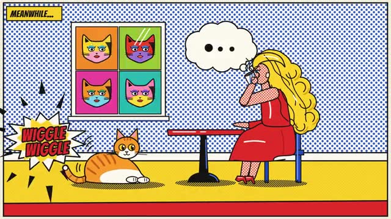
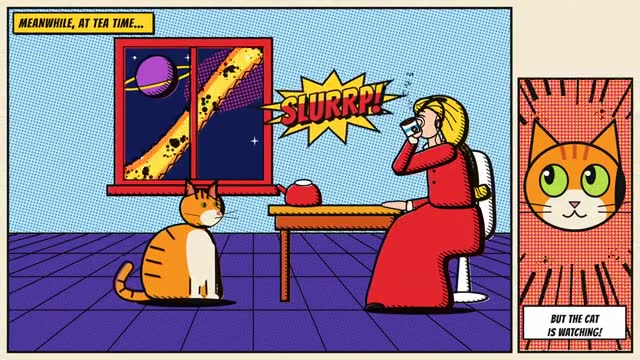

Library / Comic Books
9 keywords in this category, each one tested and explained in plain language.
Pick keywords as you browse, then press Copy for AI and paste into ChatGPT, Claude or any AI. Copy keywords gives a plain list for Midjourney or Seedance.

Tiny evenly spaced colored dots used in old printed comics to make pinks, skies and skin tones.
A short row of three or four panels that tells a tiny story, like the funny pages in a Sunday newspaper.
The look of early comic books from the late 1930s to the early 1950s: simple bold heroes, flat bright colors, thick lines and slightly off-register printing on yellowed paper.
A page split into neat comic boxes, each showing a moment in order, like a little storyboard.

Comic books from the late 1950s to about 1970: cosmic heroes, blocky muscular action, crackling energy dots, big sound-effect lettering and four-color printing.
Big, bursting comic words like POW, BOOM and CRASH, drawn in chunky shapes with outlines and jagged edges.
The rounded balloon with a little tail that shows who is talking in a comic.
A full comic page given to one huge, dramatic picture, usually a hero arriving or a big battle.
A puffy cloud above a character's head, joined by little circles, showing what they are secretly thinking or dreaming.